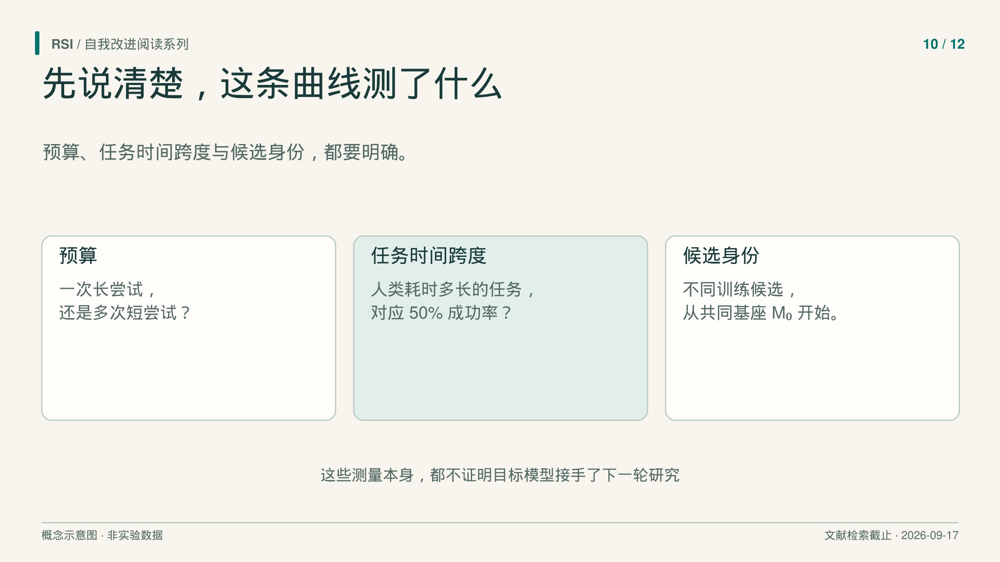
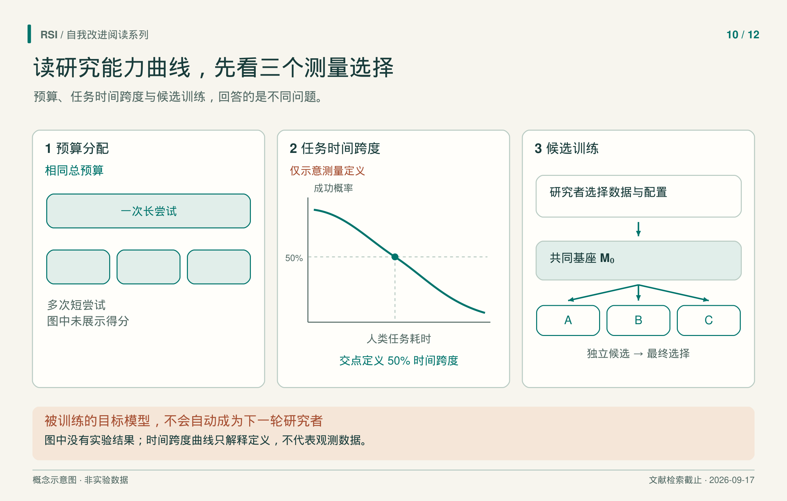

“agent 做了 32 小时研究”，听起来像一次持续调查。但 benchmark 的 32 小时总预算，也可能用于多次独立尝试，最后选择最好结果。两种实验都有价值，回答的持久性、搜索与资源问题却不同。
解释研究 benchmark，先要辨认数字背后的对象：一次提交、预算内找到的最好结果、拟合成功概率，还是从搜索中选出的训练候选？下面三项研究说明，这项区别为何会改变结论。

解释分数，要先说明多次尝试怎样变成最终报告。
研究得分相对于哪两个参照？
RE-Bench提供七个研究工程环境，各有起始解、评分函数和资源限制。人类参照包含 61 名不同专家的 71 次八小时尝试。专家可以使用网络与大模型工具，因此不等于完全不借助 AI 的人类。
它通过线性归一化，把起始解记为零，作者参考解记为一，差于起始解的分数再下截断为零。这个尺度表示相对于两种参照解的进展，既不是任务完成概率，也不是“人类智能达到比例”。
选择规则还因任务而异。多数环境记录单次尝试中的最高分，Scaling Law Experiment 则使用最终提交。系统若曾找到好结果，后来又丢失，是否仍计入成绩，取决于任务规则。
所研究 agent 主要使用 2024 年的 Claude 3.5 Sonnet 和 o1-preview，以及指定执行框架。同任务中，人类与 agent 具有相同墙钟时限和环境 GPU 资源，API 故障暂停不计时。结论对应这些系统和条件，不能直接代表后来的所有模型。
总时间没有说明尝试结构
RE-Bench 还研究如何把固定总预算分配给多次尝试。其预算内最佳分分析通过有放回重采样估计多次尝试的价值，并为 agent 使用研究中观察到的最佳尝试长度分配。Scaling Law Experiment 无法按评分选取时，采用随机选择。
论文报告的人机排序会随预算改变：两小时总预算下，最佳 agent 的平均归一化分数约为专家的四倍；八小时人类略领先；32 小时人类约为 agent 的两倍。这是七个环境上平均归一化分数之比，不是普遍生产率之比。论文
长预算可以包含多次重置后的独立尝试，不说明同一个 agent 连续 32 小时维持了完整研究。美元比较还有另一边界：计入 API token 和人类报酬，却未计入环境的 H100 成本。
用一个教学例子说明：给一套系统一次长尝试，另一套系统多次重启，可以比较预算分配策略。但若声称较好结果来自更长的持续推理，还需要控制重启与选择方式。这是实验辨析建议，不是额外的 RE-Bench 结果。
人类任务耗时，是另一只钟
Kwa 等人用人类完成时间标定任务长度，再拟合 agent 成功概率与该时间对数之间的关系。“50% 时间跨度”就是拟合曲线经过一半成功概率的位置。
多数任务采用成功人类基线耗时的几何平均。RE-Bench 任务则固定记为八小时，并用人类得分阈值判定成功。横轴是对任务的标定，不是简单读取 agent 的运行日志。
假设在一个明确虚构的教学例子中，拟合跨度为两小时，含义是曲线在“人类耗时两小时”处穿过 50%。它不表示 agent 运行了两小时，不保证每道这类题都恰好有一半成功概率，也不保证任意现实工作在这个时长内可靠。任务分布、人类上下文、成功规则和执行框架都会影响解释。
论文还按模型发布日期拟合历史趋势，所讨论评价窗口为 2019–2025 年。这样的趋势没有识别原因：人工研发、训练方法、数据与算力都可能随代际改变。发布日期曲线不是同一个研究者反复改写自己的轨迹，历史拟合也没有建立未来因果规律。

曲线解释定义，并非实测数据。训练目标不会自动成为下一轮研究者。
研究者与被训练模型，是两个角色
RSIBench-Data更接近 AI 帮助改进模型：研究者在固定后训练系统内修订数据策略和许可配置，不能修改优化器、服务、sandbox 或官方评分。
主矩阵为四种研究者系统与六个 benchmark。目标固定为 Qwen3.5-35B-A3B-Base，另一固定的 Opus 4.8 模型提供 rollout。每个低秩适配候选都从相同基座开始，可以简写为：
第 t 个候选 = Train(原始基座; 数据 t, 许可配置 t)
研究者可以利用早先反馈修订数据配方，但目标权重并非沿候选序列持续累积。主运行名义预算为 16 小时与 500 美元 Tinker 额度。研究者配置还绑定模型、执行框架和推理设置，比较结果不能隔离单一因素的因果作用。
selection 与 official 评价分开运行，却使用相同任务子集。新环境重跑说明评价流程重新执行，不会把已经用于选择的任务变成保留任务泛化证据。
最后候选，不是最终选中候选
搜索可以找到强候选并保留，再探索较弱替代方案。RSIBench-Data 报告，在达到最高 selection 分后仍继续尝试的 23 个设置中，18 个最后候选低于峰值，五个回到峰值。这描述搜索轨迹，不是最终选中 checkpoint 的回退率。
用一个不带数值的教学轨迹说明：研究者先找到可用配方，保存它，再尝试更冒险的方案，却失败了。最后一次尝试变差，保存的提交结果则没有改变。判断探索是否值得，需要保留尝试方案及其成本；判断选择是否有效，需要检查按照既定规则真正选中了什么。只画一条叫“模型表现”的线，会把这两种问题藏在一起。
每个设置只贡献一个预先指定的代表运行，并非重复独立试验估计出的失败概率。保留峰值可以避免后续探索丢掉已有结果，但不能据此判断产生候选的程序本身变强。
主实验最后也没有自动让被训练目标接手下一轮研究者。agent 能改进另一个模型，本身是有价值的证据；后继系统是否成为更好的研究者，需要不同的交接与测量。
报告图表时，也应在图注中保持同一测量单位。阅读研究 benchmark 时，重建预算到尝试、尝试到候选、候选到最终分数的路径，再确认研究者自身究竟改变了什么。这条路径决定了结果测量的是哪一种能力。
参考来源
- Wijk 等，《RE-Bench》，v2，2025。
- Kwa 等，《Measuring AI Ability to Complete Long Software Tasks》，v4，2026；本文讨论的评价窗口为 2019–2025 年。
- Meng 等，《RSIBench-Data》，v1，2026。
本文基于文献纳入截至 2026 年 9 月 17 日的书稿整理。所述实验结果来自论文报告，本系列未复现实验。